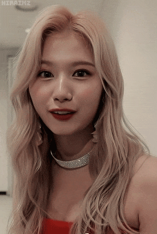

Integrantes
En este sitio encontraras toda la información acerca de las miembros de Twice
Im Nayeon
Im Na Yeon (임나연) nació en Seul, Corea del Sur el 22 de Septiembre de 1995 Pertenece a la Agencia JYP Entertainment. En 2015 Nayeon compitió en el programa de supervivencia femenino de Mnet Sixteen, el cual determino los miembros finales o oficiales del nuevo grupo chicas de JYP Entertainment, Twice. En el episodio final del programa, Nayeon fue elegida para ser una de las miembros de Twice. Luego del Programa SIXTEEN, Nayeon debutó junto a sus demás compañeras de Twice el día 20 de Octubre del 2015 con la Canción y el Vídeo "LIKE OOH-AHH" y el Mini-Álbum "The Story Begins".
Posiciones:
- Lider Vocalista
- Lider Bailarina
- Centro
- Cara del grupo
Yoo Jeongyeon

Yoo Jeong Yeon (유정연), mejor conocida por su nombre artístico Jeongyeon, es una cantante surcoreana bajo JYP Entertainment. Ella es integrante del grupo de chicas k-pop, Twice, como vocalista secundaria del grupo.
Posición:
- Lider Vocalista
Momo Hirai

Momo Hirai (平井 もも), es la conocida cantante, modelo, bailarina y miembro del popular grupo de K-pop conocido como "Twice". Nacio en Kioto, Japón el 9 de noviembre de 1996 en el seno de una familia tradicional.
Posiciones:
- Bailarina Principal
- Sub vocalista
- Sub Rapper
Sana Minatozaki
Sana Minatozaki (湊崎 紗夏 Minatozaki, Tennōji-ku, Osaka, 29 de diciembre de 1996), comúnmente conocida por el monónimo Sana (coreano: 사나 , japonés: サナ), es una cantante, bailarina, compositora, y presentadora japonesa, que actualmente reside en Corea del Sur. Debutó en 2015 como miembro del grupo femenino Twice creado por JYP Entertainment.
Posición:
- Sub Vocalista
Park Jihyo

Park Ji-hyo (uri, Gyeonggi, Corea del Sur ; 1 de febrero de 1997), más conocida como Jihyo, es una cantautora, modelo y bailarina surcoreana. En 2015, participó en el programa Sixteen, donde compitió para formar parte de Twice. Debutó como integrante, centro y líder del grupo en el mismo año, bajo JYP Entertainment.
Posiciones:
- Lider
- Vocalista Principal
Myoi Mina
Myōi Mina (San Antonio, Texas; 24 de marzo de 1997), conocida simplemente como Mina (名井南) , es una cantante, bailarina, modelo y compositora nipo-estadounidense, miembro del grupo femenino Twice, formado por JYP Entertainment en 2015.
Posiciones:
- Bailarina Principal
- Sub vocalista
Kim Dahyun
Kim Da-hyun (en coreano, 김다현) (Seongnam, Provincia de Gyeonggi; 28 de mayo de 1998), más conocida como Dahyun, es una rapera, cantante, modelo y bailarina surcoreana. Es miembro del grupo femenino Twice formado por JYP Entertainment.
Posiciones:
- Lider Rapera
- Sub vocalista
Son Chaeyoung
Son Chae-young (hangul : 손채영 ; Seúl, 23 de abril de 1999), más conocida como Chaeyoung, es una cantante, rapera, modelo, bailarina y compositora surcoreana. que debutó en la escena musical en 20152 con el grupo femenino Twice.
Posiciones:
- Rapera Principal
- Sub Vocalista
Chou Tzuyu
Chou Tzuyu (chino tradicional: 周子瑜; pinyin: Zhōu Zǐyú, hangul: 저우쯔위; Tainan, Taiwán, 14 de junio de 1999), conocida simplemente como Tzuyu (en hangul, 쯔위), es una cantante, modelo y bailarina taiwanesa. Tzuyu debutó como integrante del girl group Twice en 2015 bajo el sello discográfico JYP Entertainment
Posiciones:
- Lider Bailarina
- Sub Vocalista
- Visual
- Maknae